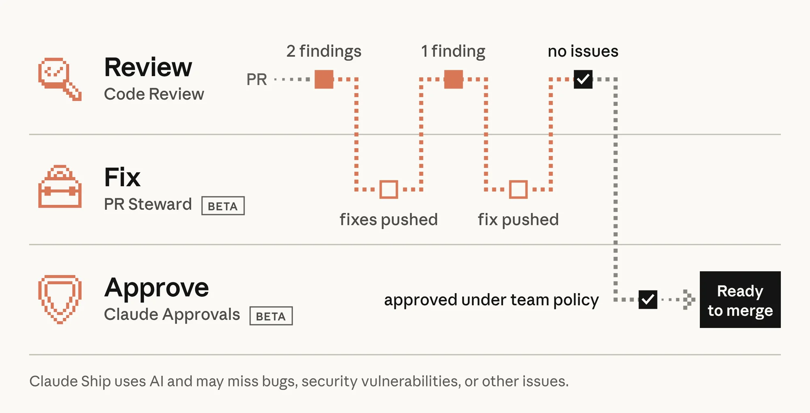
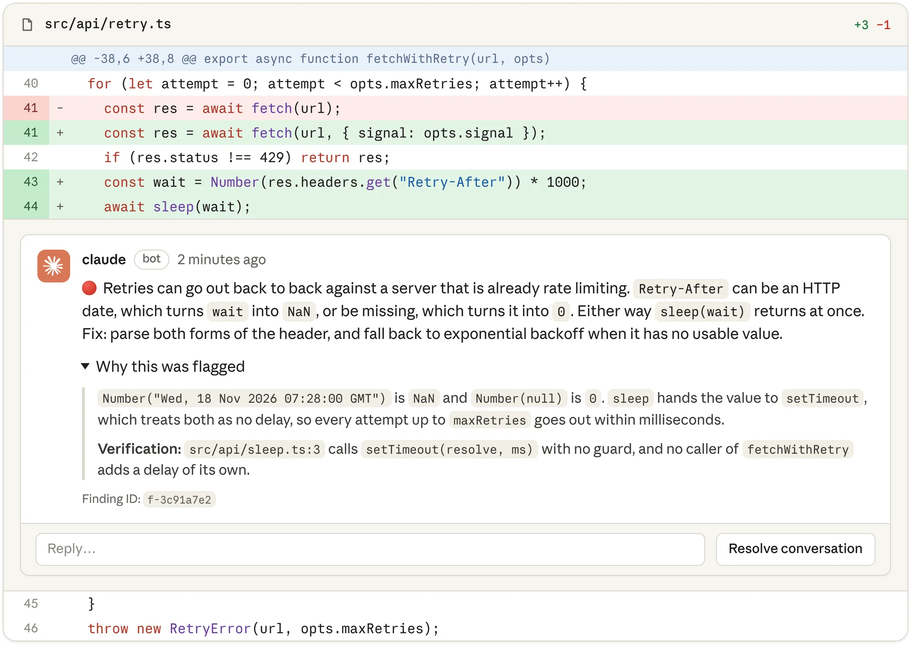
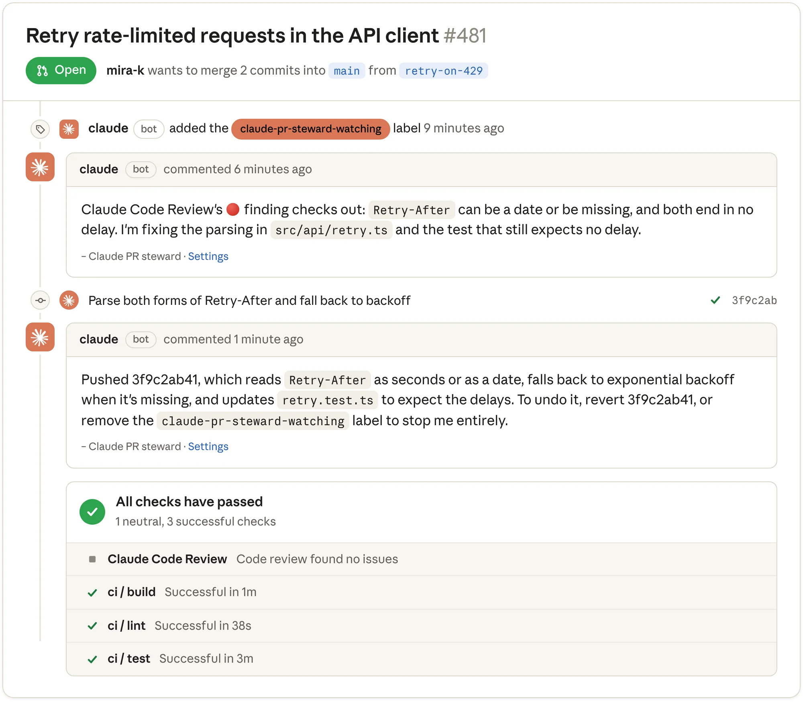
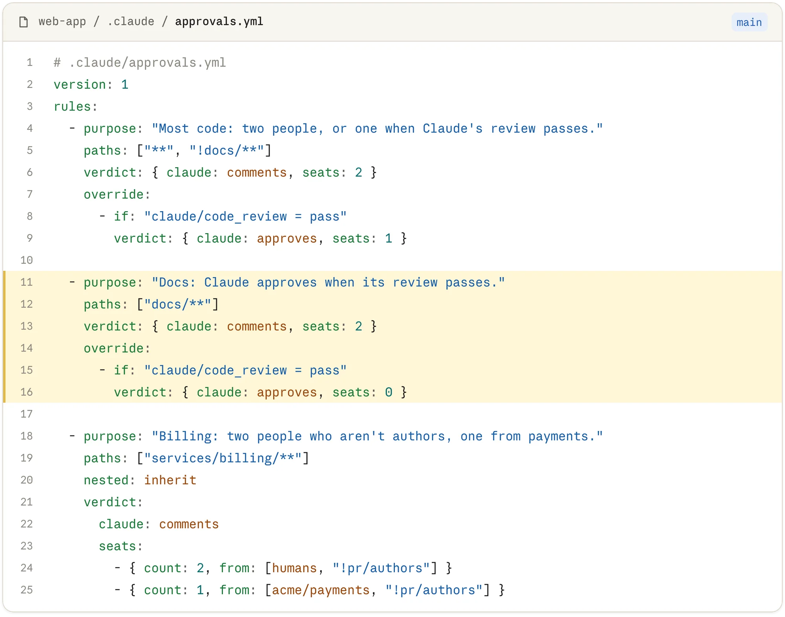
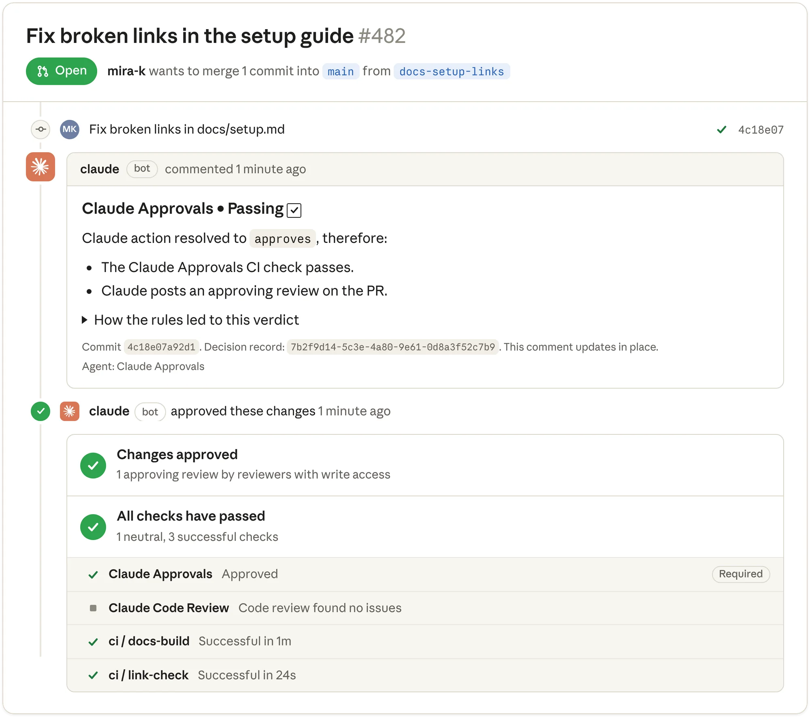
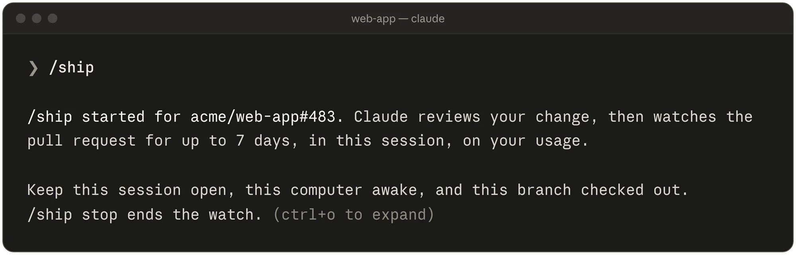

ANTHROPIC · CLAUDE SHIP 发布公告 · 2026-11-23
Introducing Claude ShipClaude Ship 发布：审、修、批，都可以交给 Claude
60 秒速览：这篇公告在说什么
译者所加，不是原文的一部分 —— 读完这 9 条，再看原文会快很多。
- 先知道一件事：这是「决策篇」，讲是什么、多少钱、谁能用。真要动手配，看姊妹篇《用 Claude Code 把 PR 一路送到可合并》——页底延伸阅读地图里标 L8 的那张卡可以直接点开（本机文件，断网可用）。
- 一句话：开完 PR 之后那堆活——审、修、批——Anthropic 现在打包成了三个 agent；能不能合不再靠人去催，而是靠仓库里一份策略文件。
- 三个 agent 的分工：Code Review 找问题（正式可用，按仓库选 Quick / Standard / Deep）；PR Steward 把 PR 养绿但不批准、不合并（公测）；Claude Approvals 按策略文件决定要不要批（公测）。
- 两条入口：开发者在自己机器上敲
/ship，会话内最多盯 7 天；管理员在组织设置里逐仓库打开，PR 一开就自动跑，开发者不用手动敲。 - 钱怎么算：按 token 计；Enterprise 可领至少 $10,000 额度（领取后 30 天内用完，2027-01-15 截止，金额按席位在 $10,000–$50,000 之间）。管理员可给 Code Review 和 PR Steward 设花费上限。
- 最容易忽略的坑：观察模式不是免费——策略只要点名 Claude 的审查，就会触发计费的 Code Review；Approvals 的分类器也按 token 计费。
- 用不了的三类组织：启用零数据保留（ZDR）的、套用 HIPAA 配置的、用客户自管密钥（CMEK）的。
- 真实链路：产品经理读客户反馈 → 让 Claude Tag 开 PR → Code Review 无阻塞 → 文档评审签字 → Approvals 通过 → 当晚合并。变的是「谁能对反馈动手」。
- 这篇与配套指南的关系：这篇讲「是什么、多少钱、怎么开」；隔天发布的《A practical guide to shipping with Claude Code》讲
/ship与规则文件具体怎么写。
过去：PR 之后靠人救火
- 开完 PR 就去干下一件事，评审回来再切回去
- CI 红了、冲突了，等人回来处理
- 找有权限的人来点批准，人不在就卡住
- 规则存在脑子里，每次口头重复
这篇公告：三段分层接手
- Code Review 在 PR 上直接贴问题单（问题、触发条件、修法）
- PR Steward 接 CI 失败、冲突、评审反馈，每推一次都写清怎么撤回
- Claude Approvals 按仓库里的策略文件判，观察模式先只报判断
- 「谁能批」写成文件，按路径分松紧
这张对比卡是译者按正文归纳的，不是原文的表格。原文强调的边界是：Steward 不批准、不合并；Approvals 要挡住合并，得在 GitHub 里把它的检查设成必需。
读法建议：先看第一节的三段流水线（配图 1 是全文坐标系），再看「两条入口」判断自己是开发者还是管理员，最后读「可用性」算钱和合规。要动手配置，转到配套的实操指南。
开 PR 之后的收尾活为什么总把人拽走，以及 Anthropic 为什么决定把这一段交给三个 agent。
Anyone who has opened a pull request knows how this goes. They start on the next thing, and then the review comes back. So they stop, dig back into the old code, push a fix, and wait for the review to run again. Then they go find someone to approve it.
任何开过拉取请求（PR）的人都知道这套流程是怎么走的。他们转身去干下一件事，然后评审回来了。于是他们停下来，翻回旧代码、推一版修复，再等着评审重跑一遍。然后还得去找人来批。
There’s a good reason it works this way. Most teams want a person to approve every change, and that’s easy to keep up with when people write every line. But a lot of developers build with agents now. On the Claude Code team, Claude writes most of our code, and we wanted everything after the PR to move that fast too.
这套流程能一直这样，是有原因的。多数团队希望每一处改动都由人来批，而当每一行都是人写的时候，这个要求不难跟上。但现在很多开发者都在用智能体干活。在 Claude Code 团队，Claude 写了我们大部分代码，于是我们也希望 PR 之后的一切都能以同样的速度往前走。
That’s why we built Claude Ship, available today in beta. It can review PRs, fix them, and decide what’s ready to merge based on policies each team sets. Teams stay in control of where it runs and which changes need a person. The goal: ship code as fast as teams write it.
这就是我们做 Claude Ship 的原因，它今天起以公测形式开放。它能审 PR、修 PR，并按每个团队自己写的策略判断哪些改动可以合并。团队仍然掌握它在哪些仓库跑、哪些改动必须由人来定。目标就一句：代码写得多快，就能发得多快。
Eligible Claude Enterprise organizations can claim at least $10,000 in Claude Ship credits to use within 30 days of claiming. Claim by January 15, 2027. Terms apply.
符合条件的 Claude Enterprise 组织可以领取至少 $10,000 的 Claude Ship 额度，须在领取后 30 天内用完。1领取截止 2027 年 1 月 15 日。条款适用。
How Claude Ship works: review, fix, and approveClaude Ship 怎么工作：审、修、批
三个 agent 各管一段：Code Review 找问题、PR Steward 修、Claude Approvals 判。三者可以只开其中一个，边界写在产品里。
Claude Ship is made up of Code Review, which is already generally available, and two new agents in beta: PR Steward and Claude Approvals. Together, they take a pull request through review, fixes, and an approval decision so teams don’t have to manage each step manually.
Claude Ship 由三部分组成：Code Review（代码审查，已正式可用），以及两个处于公测的新智能体：PR Steward 与 Claude Approvals。三者合起来，把一个拉取请求走过审查、修复和批准决定这三段，团队不必再逐步手动管。

三段流水线：审 → 修 → 批 三行分别对应三个 agent：Review（Code Review）、Fix（PR Steward BETA）、Approve（Claude Approvals BETA）。中间三条竖线是同一段时间轴：2 findings → 修 → 1 finding → 修 → no issues → 按团队策略批准 → Ready to merge。
原文图注：Claude Ship helps teams review PRs, fix them, and decides what’s ready to merge. Claude Ship uses AI and may miss bugs, security vulnerabilities, or other issues.
这张图怎么看（5 条）
- 从左到右读三列：Review → Fix → Approve，每一列是一个 agent 的职责范围。
- 列标题下的两条线是分支条件：2 findings、1 finding 往回修，no issues 直接往下走。
- 横着的虚线写着 fixes pushed、fix pushed——修完就重新推，回头再审。
- 右边 Approve 一列里，approved under team policy 用虚线框住：批不批由策略文件说了算。
- Reached「Ready to merge」在最右侧，且 Fix、Approve 两个标签都带着 BETA。
一句话：审与修会来回几轮，但「能不能合」只在最后一步、由策略判定。
Code Review performs an in-depth review of pull requests against the codebase through multiple lenses. It collects findings, adversarially verifies them, categorizes them, and posts them to a PR. On the Claude Code team, where Claude’s review is one layer of a broader process, merged PRs more than doubled from June to September while the share reverted fell by more than 40%. Code Review gives teams fast reviews, clear findings, and a choice of Quick, Standard, or Deep review levels for each repository.
Code Review 从多个视角、对着整个代码库深审每个拉取请求。它先把问题收集起来，用对抗的方式逐条验证、归类，再贴到 PR 上。在 Claude Code 团队，Claude 的审查只是更大流程中的一层：从 6 月到 9 月，合并进主干的 PR 翻了一倍多，而需要撤销的比例下降了 40% 以上。Code Review 给团队的是快审查、清楚的问题单，以及按仓库选 Quick、Standard 或 Deep 的审查力度。2

一条问题单：问题、原因、验证 GitHub PR 的 diff 下方，Claude 用一条评论把问题说全：红点标严重度，正文给 Fix，展开后是 Why this was flagged 与 Verification，末尾有 Finding ID。
原文图注：Example of Code Review posting findings on a pull request.
这张图怎么看（5 条）
- 先看 diff 右侧 46–47 行新增的代码：wait 取自 Retry-After 响应头。
- 评论第一行的结论：这个头可能是 HTTP 日期，也可能不存在，两种情况都会让后面的等待失效。
- Why this was flagged 给了两个证据：日期字符串转数字得到 NaN，null 转数字得到 0。
- Verification 指向 src/api/sleep.ts:3：那里没有守卫——「验证过」指的是这一行。
- 末尾 Finding ID 是 f-3c91a7e2，引用同一条问题靠它。
一句话：问题单不是「这里可能有问题」，而是「什么条件下会坏、在哪一行验证过」。
PR Steward works to keep a PR green, but is designed not to approve or merge pull requests. It jumps in on failing CI checks, merge conflicts, and review feedback from Code Review, other review tools, or team members. After every push, it comments with what it changed and how to undo it. Developers can comment @claude with an instruction to steer the work, or @claude stop to have it step back.
PR Steward 的活是把 PR 养到全绿，但它在设计上不批准、也不合并拉取请求。它接手的场景有：CI 检查失败、合并冲突，以及来自 Code Review、其他审查工具或团队成员的意见。每推一次，它都会留一条评论，写明改了什么、怎么退回。开发者可以评论 @claude 给指令来带方向，或者评论 @claude stop 让它退回去。

Steward 的两条评论，和一句怎么撤回 同一个 PR 页面上：claude 先打上 claude-pr-steward-watching 标签，再发评论说它在修 Code Review 提的那条 finding；推送后再评论一次，写明提交号与撤回方式；底部检查全绿。
原文图注：Example of PR Steward working on fixes on a pull request.
这张图怎么看（5 条）
- 顶部标签 claude-pr-steward-watching 是「它在盯这个 PR」的开关，标签删掉就停。
- 第一条评论的正文引用了 Code Review 的 finding，说明改动落在哪里、性质是什么。
- 提交标题 Parse both forms of Retry-After and fall back to backoff 旁的短哈希 3f9c2ab，就是它推的提交。
- 第二条评论给出两种撤回办法：revert 这个提交，或删掉标签。
- All checks have passed 下面「1 neutral, 3 successful checks」：Code Review、ci/build、ci/lint、ci/test。
一句话：它每推一次都留下「改了什么、怎么退」，这正是它不被允许批准的原因。
From there, Claude Approvals applies an approval policy that the team writes as a file in the repository. Claude can approve routine changes on its own if the policy allows it, or can require deeper human sign-off for certain scenarios. It works like a smarter CODEOWNERS file. Teams can have Claude Approvals consider a variety of signals in its decision-making process, including Code Review findings or their own classifiers using natural language. For most customers, we recommend enabling this first in observe-only mode to build confidence before configuring branch protection to require Claude Approvals’ green light.
接下来由 Claude Approvals 执行一套审批策略——这套策略由团队写成文件、放进仓库里。策略允许时，它可以自己批常规改动；遇到特定场景，也可以要求人来签得更深一层。它用起来像一个更聪明的 CODEOWNERS 文件。团队可以让它在判断时参考多种信号：Code Review 的问题单，或者自己写的、用自然语言描述的分类器。对多数客户，我们建议先只用观察模式跑一阵，把信心建立起来，再去配置分支保护，把 Claude Approvals 的放行设成合并的前提。3

approvals.yml：三段规则，三种松紧 仓库里的 .claude/approvals.yml：普通代码要两人批准；docs 在 Claude 审查通过后零人；billing 要两人且其中之一必须来自 payments；nested: inherit 让规则带进子目录。
原文图注：Example of a Claude Approvals policy file.
这张图怎么看（5 条）
- 第一条规则用 paths 排除 docs：覆盖其余一切，seats: 2 表示要两位非作者的人，override 在审查通过时降到 1。
- 第二条规则高亮成黄色：docs/** 在审查通过时 seats: 0，等于 Claude 自己就能批。
- 第三条规则里：from 限定成 acme/payments 的人，感叹号前缀表示排除（!pr/authors 即「不是作者」）。
- nested: inherit 让子目录在没有自己的规则时继承这一条。
- purpose 是给人看的说明，下面每一段都写了「为什么这条存在」。
一句话：同一个文件里可以同时有「零人」「一人」「两人且指定来源」，松紧按路径分。

通过时，PR 页面上多出什么 Claude Approvals • Passing 的评论说明它做了什么；下方 Changes approved 显示有一条有写权限者的批准；检查列表里 Claude Approvals 标着 Required。
原文图注：Example of a pull request that met its approval policy.
这张图怎么看（5 条）
- 评论标题 Claude Approvals • Passing 与右侧的绿勾：这次判定是「批准」。
- 正文两条是它的动作：check 通过、在 PR 上发一条 approving review。
- How the rules led to this verdict 可以展开，能追到 Decision record。
- Changes approved 里写「1 approving review by reviewers with write access」：它被当作有写权限的评审者。
- 检查列表里 Claude Approvals 后面跟 Required——只有设成必需检查，它才真的挡合并。
一句话：「Claude 批了」在 GitHub 上就是一次真批准；挡不挡合并，看有没有设成 Required。
Two ways to get started两条入口：自己敲 /ship，或者让管理员开
开发者路径是本地命令，管理员路径是组织设置加策略文件；两条路可以并存，副作用都算在 token 上。
For developers: /ship it from Claude Code开发者：在 Claude Code 里敲 /ship
Developers can try Claude Ship on their own pull requests with the new /ship command in Claude Code. When a change is ready, they run /ship. Claude pushes it, opens the PR, reviews the change, and works on feedback and failing checks to help get it ready to merge. What can merge depends on the developer’s permissions and the repository’s branch rules.
开发者可以用 Claude Code 里新增的 /ship 命令，在自己的拉取请求上试用 Claude Ship。改动准备好后，敲一下 /ship。Claude 会把它推上去、开出 PR、审这次改动，再去处理评审意见和失败的检查，把它养到可以合并。最终能不能合，取决于开发者的权限和仓库的分支规则。

终端里敲 /ship 之后 Claude Code 会话里运行 /ship：它说明自己在为哪个仓库、哪个 PR 启动，会审这次改动，并在当前会话里盯这个 PR 最多 7 天，用你的用量计费。
原文图注：Example of running /ship in Claude Code.
这张图怎么看（5 条）
- 第一行 /ship started for acme/web-app#483：仓库名加 PR 号，说明它已经把 PR 立起来了。
- watches the pull request for up to 7 days：上限七天，不是无限值守。
- in this session, on your usage：跑在你这台机器的这个会话里，算你的用量。
- Keep this session open / this computer awake / this branch checked out：三条约束，断一条就守不住。
- 最后一行 /ship stop ends the watch：想提前收工，用这条命令。
一句话：本地 /ship 是「你的会话替你守夜」，机器睡了它就守不住。
For admins and engineering leaders: set the rules, one repository at a time管理员与工程负责人：一次一个仓库，把规则定好
Turning Claude Ship on for an entire repository puts it to work across a team’s pull requests automatically, under settings and an approval policy the team controls. Developers don’t need to manually invoke the /ship command.
为整个仓库打开 Claude Ship 后，它就会在团队的所有拉取请求上自动干活，跑在团队自己设定的设置和审批策略之下。开发者不必再手动敲 /ship。
- Admins choose where it runs. An admin turns on Code Review and PR Steward for each repository. Claude Approvals starts when a connected repository has a policy file on its default branch, and an admin can turn it off.
- Each repository gets the settings it needs. Admins choose the review level (Quick, Standard, or Deep), choose when reviews run, and configure spend limits.
- Teams keep the tools they have. Claude Ship works with existing branch protection and required checks.
- 管理员决定它在哪儿跑。Code Review 与 PR Steward 由管理员逐仓库打开；已连接的仓库只要默认分支上有策略文件，Claude Approvals 就会启动，管理员也可以把它关掉。4
- 每个仓库拿到自己需要的设置。管理员可以选审查力度（Quick、Standard、Deep）、选什么时候跑审查，并配置花费上限。
- 团队现有的工具不动。Claude Ship 与现有的分支保护、必需检查是配合关系。
Teams set the pace. They can start with one repository, choose a review level and when reviews run, set a monthly spend limit, and run their approval policy in observe mode until they trust it.
节奏由团队自己定。可以从一个仓库开始，挑一档审查力度、定什么时候跑，设一个月度花费上限，并让审批策略先在观察模式下跑，直到团队信得过为止。
How the Claude Code team shipsClaude Code 团队自己怎么用
最能说明变化的是「谁能对客户反馈动手」：一个产品经理读完反馈，就能让 Claude Tag 开出 PR 并走完全程。
We run Claude Ship on many of our own pull requests. One of the biggest changes is who can act on customer feedback. For example, a product manager on the Claude Code team can now read a piece of feedback, talk through ideas and tradeoffs with Claude Tag, have it open a PR, and move on to the next thing while Claude Ship takes it through review, fixes, and an approval decision.
我们自己的很多拉取请求就跑在 Claude Ship 上。最大的变化之一，是「谁能对客户反馈动手」。举个例子：Claude Code 团队的一位产品经理现在可以读一条反馈，和 Claude Tag 把思路和取舍聊一遍，让它开出一个 PR，然后转身去忙下一件事——审查、修、批准决定交给 Claude Ship。
Recently, a customer was confused because our Analytics API documentation implied an Admin key could pull Pro and Team usage. The PM asked Claude Tag whether a fix was in flight, and it opened one. Code Review found nothing blocking, a docs reviewer signed off, Claude Approvals passed, and the fix merged that same evening.
最近就有个客户搞混了：我们的 Analytics API 文档读起来像是在说，Admin 密钥也能拉 Pro 和 Team 的用量。那位产品经理问 Claude Tag 有没有人在修，它直接开了一个 PR。Code Review 没发现阻塞问题，文档评审签了字，Claude Approvals 通过，当天晚上就合了。
What customers are saying客户怎么说
两个客户的口径一致：Claude 先把问题挡在人前面，人的时间留给真正需要人的改动。
“We have had numerous cases where Claude Code Review caught real issues before a human reviewer got to the pull request, and PR Steward helped the contributor fix them. Our reviewers were already using Claude Code to keep up with the volume, so having Code Review, PR Steward and Claude Approvals start automatically when a pull request opens makes that simpler. We keep a human in the loop, and the human’s time now goes to the changes that need it.”
“很多次都是 Claude Code Review 在人审之前就把真问题挑了出来，PR Steward 再帮贡献者改掉。我们的评审者本来就在用 Claude Code 跟上这个量，所以 PR 一开、三个 agent 自动启动，对他们来说更省事。人始终在环里，只是现在人的时间都花在真正需要人的改动上。”
Vatsal Bhatt, Director of Engineering
——Vatsal Bhatt，工程总监
“PR Steward is helping teams in our pilot spend less time working through code review feedback and more time building. We can tailor it to our teams’ processes, including how it suggests changes and organizes feedback. That flexibility has made it a useful part of the development workflow.”
“在我们的试点团队里，PR Steward 让团队在代码审查意见上花的时间变少、写代码的时间变多。我们可以按自己的流程调它，包括它怎么提改动建议、怎么整理意见。这份灵活让它成了开发流程里真能用上的一环。”
Alex Devkar, Senior Vice President, Engineering and Analytics
——Alex Devkar，工程与分析高级副总裁
Availability可用性：谁能用、怎么计费
能用的是 Team / Enterprise 加 GitHub；计费按 token，观察模式也计费；ZDR、HIPAA、CMEK 三类组织用不了。
Claude Ship is available on Claude Team and Enterprise plans for repositories on GitHub. Code Review is generally available, and PR Steward and Claude Approvals are in beta.
Claude Ship 面向 Claude Team 与 Enterprise 套餐、GitHub 上的仓库开放。其中 Code Review 正式可用，PR Steward 与 Claude Approvals 还在公测。
Claude Ship usage is billed on tokens, so turning it on can add to an organization’s costs. The amount depends on the number and size of pull requests covered, the review level, how often reviews run, and how much work PR Steward does. Admins can set spend limits for Code Review and PR Steward. Claude Approvals has no base charge, but classifiers in a policy are billed on the tokens they use, and a policy that uses Claude’s review triggers a billed Code Review, even in observe mode. Running /ship counts as regular Claude Code usage.
Claude Ship 按 token 计费，打开它可能会给组织增加成本。具体多少，取决于覆盖的 PR 数量与体量、审查力度、跑审查有多频繁，以及 PR Steward 干多少活。管理员可以给 Code Review 和 PR Steward 设花费上限。5Claude Approvals 没有基础费用，但策略里的分类器按它用掉的 token 计费；策略只要用到 Claude 的审查，就会触发一次计费的 Code Review——观察模式下也一样。运行 /ship 算普通 Claude Code 用量。
Claude Ship is not available to organizations with Zero Data Retention, the HIPAA configuration, or customer-managed encryption keys.
启用零数据保留（ZDR）、套用 HIPAA 配置、或用客户自管密钥的组织，都用不了 Claude Ship。6
Get started怎么开始
开发者先升级再敲 /ship；已经在用 Code Review 的团队加 PR Steward 和观察模式；新团队从连接 GitHub 开始。
Developers can update Claude Code and run /ship on their next change. /ship is rolling out in Claude Code and the desktop app starting today.
开发者可以升级 Claude Code，在下一次改动上直接跑 /ship。/ship 从今天起在 Claude Code 和桌面端陆续放出。
Teams already using Code Review can add PR Steward on a repository, and an approval policy in observe mode.
已经在用 Code Review 的团队，可以在某个仓库上加上 PR Steward，并配一份观察模式的审批策略。
Teams new to Code Review can read the setup guide to connect GitHub and turn on their first repository.
刚接触 Code Review 的团队，可以照 配置指南 把 GitHub 连上、打开第一个仓库。
Learn more in documentation.
更多细节见 文档。
补充材料
下面几块都是译者所加，用来补上原文没展开的部分。正文里的虚线链接、虚线术语、上标数字，都能悬停看卡片；这里给出完整的清单，方便你事后再回头查。
延伸阅读地图
原文 9 处正文引用，指向 8 个不同链接；另有 6 张配图未计入。按「不读会不会误解本文」分成三档：必读 / 背景 / 可选，建议顺序即卡片上标注的数字。每条都写了「不点开也能拿到的重点」，所以你可以完全不跳转地读完这篇文章。
Claude Code 团队怎么做代码审查
claude.dev · How the Claude Code team does code review
正文对应：Claude 写了我们大部分代码 翻了一倍多
这是什么：配套文章：当 Claude 写了团队大部分代码，审查怎么分层、怎么度量、人还剩哪些位置。
为什么值得点：公告里「Claude 写了我们大部分代码」「PR 数量翻了一倍多」「不再需要 reviewer」三处都指向这篇。想知道「团队真的这么干吗」，答案在这篇的细节里。
不点开也能拿到的重点
团队把「读代码」这件事拆成六层叠起来：验证前置、每个 PR 的 AI 审查、能阻断合并的安全审查、CI、按风险分级的人审、合并队列加功能开关，回滚托底。衡量好坏看「每个 PR 的人工批准数」和「等人时长」，护栏是撤销率与事故率。人剩下四件事：决定该不该做、审危险代码、定架构、对结果负责。
- 从 6 月到 9 月，合并进 Claude Code 的 PR 数量翻了一倍多，需要撤销的比例反而降了 40% 以上。
- 多半的「读」发生在 PR 存在之前：先验证，再用全新上下文的子智能体审 diff。
- 批准只对那一次提交有效——后续提交需要重新审查。
- 度量别只看速度：撤销率和事故率才是护栏。
Claude Ship 产品页
claude.com · Claude Ship
正文对应：Claude Ship
这是什么：Claude Ship 的官方产品页：三种 agent 各自的说明、常见问题与开通入口。
为什么值得点：公告第一句就点名 Claude Ship。想快速确认「我的套餐能不能用」「三个 agent 能不能只开一个」，这一页比公告更直接。
不点开也能拿到的重点
产品页把 Claude Ship 拆成三段讲：Code Review（每个 PR 自动审）、PR Steward（把 PR 养绿）、Claude Approvals（按策略判要不要批）。FAQ 明确每个 agent 可以单独开停；策略里让 Claude 审策略本身，会拉起计费的审查；Code Review 与 PR Steward 可设月度花费上限。
- 三个 agent 独立启停，不必整套上。
- 审批策略可以按路径分松紧，也可以先只观察。
- 让 Claude 审「策略文件本身」也要花一次审查的钱。
- 花费上限只对 Code Review 与 PR Steward 写明。
Code Review 正式可用
claude.com · Code Review is now generally available
正文对应：Code Review 正式可用
这是什么：Code Review 从研究预览转正式可用的公告（2026-10-15），列了三项改进。
为什么值得点：公告说 Code Review「现在正式可用，快了三倍」，出处就是这篇。想核对 Quick / Standard / Deep 是怎么定义的、三倍到底指什么，读它。
不点开也能拿到的重点
正式可用的三项改进：速度——多数审查约快 3 倍（预览期约 20 分钟，现在 6–10 分钟）；质量——发现说明写清问题、触发条件与修法；灵活——管理员按仓库选 Quick、Standard（默认）或 Deep。Code Review 跑在 Anthropic 基础设施上，仓库里不用加 workflow 文件；自动审查会跳过草稿 PR 与来自 fork 的 PR。
- 20 分钟 → 6–10 分钟，是「多数审查」而不是全部。
- 三个档位按仓库设，组织可设默认、仓库可覆盖。
- 草稿 PR 与 fork 来的 PR 不会被自动审。
- 开发者不配也能用：打开后新 PR 自动审。
配置 Code Review
code.claude.com · Set up Code Review
正文对应：Code Review 设置
这是什么：管理员开启 Code Review 的完整步骤：连 GitHub、装 App、选仓库、设审查档次与触发时机。
为什么值得点：「管理员在 Claude 设置里打开 Code Review」这句话背后有一串前置条件（组织 Owner、GitHub App、仓库写权限）。真要开，照这篇一步步走。
不点开也能拿到的重点
入口是 claude.ai 的 Admin settings > Claude Code > Code review。需要组织 Owner 角色、一个 GitHub 组织 Owner 装 Claude GitHub App 并绑定、以及你对每个仓库的写权限。每个仓库默认「每次推送都审」，可改成只在建 PR 时审、或手动（评论 @claude review 触发）。改档位、改触发时机、加仓库都在同一张表里点 Edit。
- 审查跑在 Anthropic 基础设施上，仓库里不加 workflow 文件。
- 自动审查跳过草稿 PR 和 fork 来的 PR。
- 手动模式下 @claude review 可触发；@claude review always 可订阅后续推送。
- 把整个 GitHub 组织纳入覆盖会显著推高花费，且必须先设月度上限。
Claude Ship 文档
code.claude.com · Claude Ship
正文对应：Claude Ship 文档
这是什么：Claude Ship 的官方文档：三个 agent 怎么配、怎么计费、怎么关，含 approvals.yml 字段说明。
为什么值得点：公告末尾指向它。本文提到但没展开的东西——观察模式怎么开、关的顺序为什么是那样、/ship 与 /steward 的关系——都在这里。
不点开也能拿到的重点
文档把三段写成可操作的配置：Code Review 按仓库设档位与触发时机；PR Steward 用 /steward 开关（首次运行会写入 pr-steward.yml 与 CLAUDE.md 规则）；Claude Approvals 靠默认分支上的 .claude/approvals.yml 生效，策略按路径匹配，verdict 支持 comments、approve、block，seats 支持从 GitHub 团队或作者群体里数人。关闭时要先关 Approvals，再关 PR Steward，最后关 Code Review，否则可能留下挡合并的必需检查。
- 观察模式也会计费：策略点名 Claude 审查就会触发一次 Code Review。
- Approvals 只有在 GitHub 里被设为 required check 才真的挡合并。
- /ship 与 /steward 是客户端命令，不随组织设置关闭而失效。
- PR Steward 在手动模式下没有自己的花费上限，直到你给它设一个。
用 Claude Code 把 PR 一路送到可合并（姊妹篇）
本机 · 姊妹篇 · A practical guide to shipping with Claude Code
这是什么：同一作者隔天发布的实操指南：/ship 与 /steward 怎么敲、仓库里的规则文件怎么写、哪些步骤该留给人。
为什么值得点：本篇回答「是什么、多少钱、谁能用」；那一篇回答「我的仓库具体怎么配」。读完这篇准备动手，直接从这张卡进。
访问说明：本机文件：与本页同级的 shipping-with-claude-code/index.html
不点开也能拿到的重点
指南把公告里的三段拆成可执行动作：本地会话里 /ship 起手、/steward 值守（最长 8 小时）；仓库里用权限模式、CLAUDE.md 与审批策略文件把边界写死；并交代「同一项检查连跑三次不过就交回人」这类止损规则。它面向没有管理员权限的开发者，管理员只在团队要自动化时才介入。
- 先在本机跑通，再把摸索出来的东西写成仓库里的文件。
- Steward 不批准、不合并，只负责把 PR 养绿。
- 规则文件写清「谁能批、批到什么程度」，而不是靠口头约定。
- 指南是本地文件，点开即读，不需要联网。
Claude Enterprise 的免费 Code Review 促销额度
support.claude.com · Free Code Review promotional credits for Claude Enterprise
正文对应：条款适用
这是什么：促销额度的完整规则：谁有资格、怎么领、怎么算、什么时候失效。
为什么值得点：公告只说「至少 $10,000、30 天、1 月 15 日截止」。金额到底怎么定、领了之后哪些行为算消耗、用完前后怎么计费，都在这篇帮助文档里。
不点开也能拿到的重点
只对付费的 Claude Enterprise 组织开放，Team、Pro/Max、试用中、经销商计费、已领过上一轮免费 Code Review 的组织都不行。Owner 在 Code Review 设置页点一次领取，金额当场按活跃 Claude Code 席位定在 $10,000–$50,000 之间；30 天从领取那一刻算，用不完不结转。领取后，这 30 天内的每次审查（含新提交与重新请求）先由额度支付。
- 金额不是固定一万，而是 $10,000–$50,000，按席位定。
- 先配好仓库再领取——30 天从领取那刻起算，不管有没有在审。
- 领取窗口：2026-10-15 至 2027-01-15 23:59 UTC。
- 额度用尽后按正常计费，并受组织花费上限约束。
Claude Tag：在任意 Slack 线程里 @Claude
claude.com · Claude Tag | Add @Claude in any Slack thread
正文对应：Claude Tag
这是什么：Claude Tag 产品页：在 Slack 线程里 @Claude，读上下文、跑数据、从讨论里开出 PR。
为什么值得点：案例里「在跟客户聊天的线程里直接开 PR」的载体就是它。不知道 Claude Tag 是什么，这段案例会读成「产品经理忽然会写代码了」。
不点开也能拿到的重点
Claude Tag 把 Claude 放进 Slack：@ 一下就接管整条线程的上下文，可以查数据、发图表、建 ticket、把讨论整理成行动项，也能从线程里的 bug 报告直接开出一个 draft PR。支持设常驻指令（盯频道、每周摘要、紧急时 @ 人）。面向 Enterprise 与 Team 客户，Teams 版即将推出。
- 不是「更聪明的聊天机器人」：它能动手——查数据、开 PR、发图表。
- 频道级记忆让上下文跨天延续。
- 可以设置常驻指令，不必每次 @。
- 只在 Slack 里有，Teams 还没上。
术语表
正文里带虚线底线的词，悬停即出解释；这里是完整 12 条，可当速查用。
能自己读代码、改文件、跑命令、在 PR 上留评论的 AI 程序。本文里它既审 PR，也修 PR，还判要不要批。
像一个能自己动手的同事：你给它规则和权限，它自己去干活。
把一份改动提交给仓库、请求并入主干的提案。改动、说明、检查结果和评审意见都挂在同一个页面上。
像一份待签字的文件：内容、批注、签字栏都夹在一起。
Claude Ship 的第一段 agent：在 PR 的 diff 上贴出问题单，写清问题是什么、什么条件下出错、怎么改。
像一个不用约时间的审稿人，PR 一开就来。
仓库自带的自动检查流水线：构建、lint、测试。CI 全绿才允许合并，所以它也是 PR Steward 要盯的东西。
像进门前的安检门，响不响决定你能不能进。
GitHub 上的规则：哪些检查必须通过、需要几个人批准，才能往这个分支合并。Claude Ship 不绕开它。
像保险柜的锁，钥匙配几把写在规则里，谁也改不了。
Approvals 里按规则判断的一个模型：确认这条策略确实适用于这个 PR，再决定批准、要求评论还是拦住。
像门口的核对员：先看你的票是不是这场的，再放行。
Approvals 的试运行：把每条策略的判断结果贴出来，但不真的批准。注意它仍会触发计费的 Code Review。
像实习法官：先写判决书给你看，但不签字。
Code Review 的三档：Quick 快、Standard 默认、Deep 深。按仓库设，越深越贵。
像体检套餐：基础项、常规项、全套，价目不同。
组织或仓库层面的月度金额上限。达到上限后，超出的审查不再启动，而不是无限花钱。
像预付费卡：余额见底就停，不会自动透支。
一种合规配置：请求处理完即删，不保留数据用于训练或其他用途。这类组织用不了 Claude Ship。
像阅后即焚的信件，看过就烧，自然没法反复引用。
美国医疗数据的合规要求。套用这套配置的组织，目前也用不了 Claude Ship。
像给病历加的额外封条，封条在，某些工具就进不来。
客户自己管理加密密钥的配置（customer-managed encryption keys）。密钥不在服务商手里，云端 agent 就读不了代码。
像保险箱的钥匙只在你身上，别人进不去。
译者注
正文中上标数字对应这里，解释的是「直译会看不懂」或「原文本身含糊」的地方。
「至少 $10,000」不等于人人一万
原文写 at least $10,000；帮助中心的口径是：金额在领取那一刻按组织的活跃 Claude Code 席位数定，落在 $10,000–$50,000 之间，领一次、30 天内用完，未用完不结转。只对付费的 Enterprise 组织开放，Team 套餐、经销商计费、试用中的组织都不行。
这里的 review level 不是本地那个 effort
公告里的 Quick / Standard / Deep 是管理员按仓库设的云端审查档位（Code Review 跑在 Anthropic 的基础设施上，越深越贵）；配套指南里 `/code-review` 的 low→max 是本地命令的 effort 档位。两套东西名字像，作用范围不同：一个管团队 PR 的自动审查，一个管你自己会话里的一次审查。
观察模式也会花钱
「先观察、不批准」听起来像免费试用，但官方文档写明 Observe mode is billed：策略里只要点名 claude/code_review，就会在符合规则的 PR 上触发计费的 Code Review，哪怕 Claude 最后什么都不批。开之前先跟管预算的人说一声。
Approvals 不是「打开开关」，是「放一个文件」
Code Review 和 PR Steward 由管理员逐仓库打开；Claude Approvals 的启动条件是「已连接的仓库、默认分支上有 .claude/approvals.yml」。反过来说，删掉这个文件就等于把它关掉；管理员也可以在设置里关。三种 agent 可以只开其中一两个。
花费上限覆盖到哪儿，原文没说全
公告与文档都只写「管理员可以给 Code Review 和 PR Steward 设花费上限」，同时又写 Approvals 的分类器按 token 计费、策略点名的审查会计费。这两笔是否受同一个月度上限约束，原文没有交代——按「上限只覆盖前两者」来读更稳妥，超支风险要自己盯。
三类配置为什么用不了，原文没解释
零数据保留（ZDR）、HIPAA 配置、客户自管密钥（CMEK）这三种组织用不了 Claude Ship。原文只给了结论，没有说明原因；从产品形态看，这三类都要求把数据处理路径收得更紧，而云端多 agent 要读代码、写评论、跑分类器——具体限制条款以官方文档为准，别在这里替它编理由。